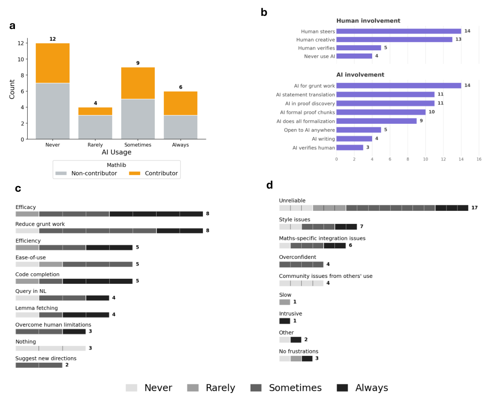
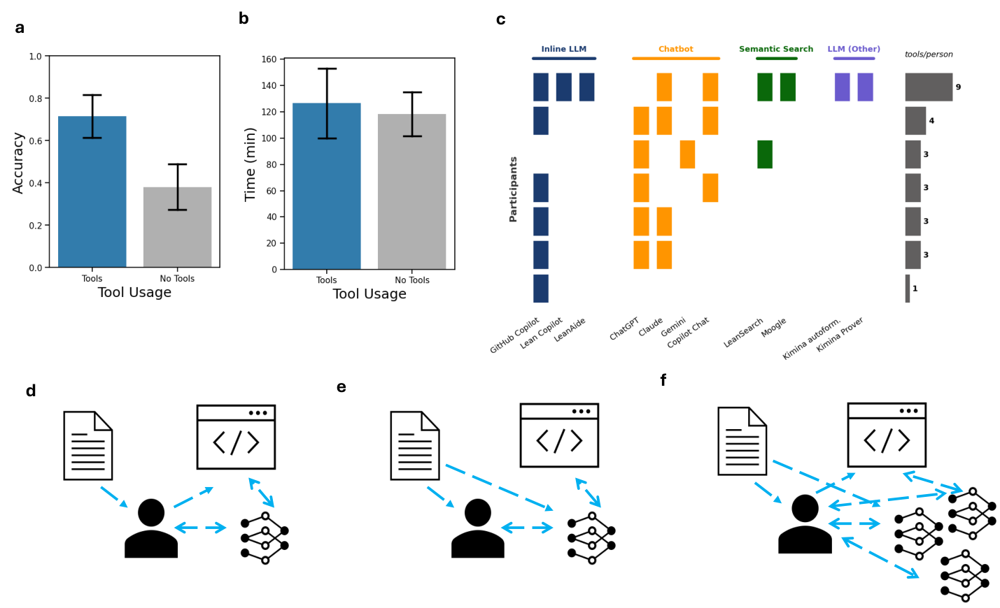
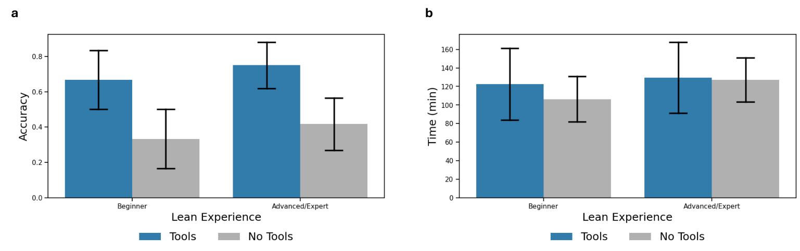

Human agency in initial human-AI proof formalization workflows
Katherine M. Collins, Simon Frieder, Jonas Bayer, Jacob Loader, Jeck Lim, Peiyang Song, Fabian Zaiser, Lexin Zhou, Shanda Li, Sam Looi, Joshua B. Tenenbaum, Umang Bhatt, Adrian Weller, Jose Hernandez-Orallo, Cameron E. Freer, Valerie Chen, Ilia Sucholutsky
Runs a user study where participants formalize informal proofs in Lean with and without AI tools, plus a survey of Lean/Mathlib users.
Abstract
For centuries, human mathematicians have written proofs to substantiate their mathematical arguments; yet, the ability to automatically verify the validity of proofs has long been a challenge. Advances in AI systems' ability to generate code and engage in increasingly high-level mathematical reasoning promise to transform people's ability to formalize and thereby verify proofs. While many works focus on benchmarking the current frontier, we instead study how people use these tools and apply agency in doing so. We conduct a mixed-methods analysis into the initial impact of AI on people's formalization workflows: what people claim they want, what they see as the barriers to those visions, and how they actually use and adapt AI in practice. A qualitative survey reveals that people's preferences are diverse, but with a general desire for AI assistance in formalization that preserves high-level human control and agency over the proof discovery process. To assess how people actually engage with AI for formalization, we conduct a controlled user study in which participants formalize informal math problems and their proofs, with and without AI, across a range of mathematical problems at varying levels of difficulty and domains. Despite limitations of the tools at the time for autoformalization, participants tended to attain higher formalization accuracy when allowed access to AI tools than when formalizing on their own, with most participants flexibly choosing to use multiple different AI tools. Taken together, our work sheds light on the early stages of AI integration into formalization workflows, involving an intimate interplay of human agency and AI engagement.
Problem
AI tools increasingly promise to help formalize proofs. Little is known about how people actually use them, or how much control they want to keep over formalization workflows.
Approach
A qualitative survey of 31 respondents, coded by Mathlib contribution and by AI, math, and formalization experience, asked about current and desired AI use. A controlled user study had seven participants formalize statements and proofs of informal problems in Lean, ranging from number theory to topology. Each participant worked on some problems with AI tools and some without, and accuracy, time and tool usage were recorded.

Figure 1 : Survey responses around current and envisioned AI use. a, Respondents’ self-reported AI usage and whether or not they contributed to the mathlib library (one indication of their experience/engagement with the Lean community); b, Number of survey respondents indicating preference for certain types of human and AI involvement across different aspects of formalization workflows. The human
Results
Preferences in the survey varied, but most respondents wanted to keep high-level human control; 66.7% preferred keeping creative or strategic control when using AI. In the user study, participants generally reached higher formalization accuracy with AI access, and most combined several tools while still writing substantial parts of the proofs themselves.

Figure 3 : Aggregate problem solving descriptive analyses, with and without tool access, and formalization workflows. a, Average accuracy (both statement and proof formalized correctly, see Appendix) across problems, for groups with and without tool use; b, Average time taken (in minutes) across problems. Error bars depict standard error; c, Types of tools used by participants and estimated number

Figure 10 : Formalization performance by Lean experience. a, Average accuracy based on whether participants self-reported as being Beginners ( N=3 ) or Experts ( N=4 ) with Lean; b, Average time (min) across problems. Error bars show standard error.